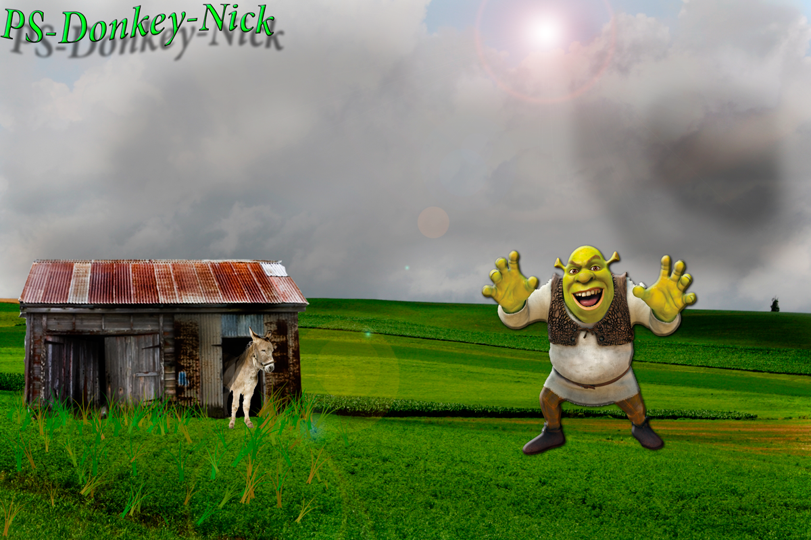

PNGPNG or (Portable Network Graphics) is a recently introduced format, so not everyone familiar with it. But PNG has been approved as a standard since 1996. It is an image format specifically designed for the web. PNG is, in all aspects, the superior version of the GIF. Just like the GIF format, the PNG is saved with 256 colors maximum but it saves the color information more efficiently. It also supports an 8 bit transparency. PNG was actually created for the intent to replace the GIF as an image format that doesn't require a patent license. PNG can support 24 bit RGB color images, grayscale images, both with and without alpha channels. RGB cannot support CMYK color spaces, and is not designed for print graphics. |  |
Pros
Cons
|
 |
Nick Cottrell, web design pd1
Nick Cottrell Web Design PD01